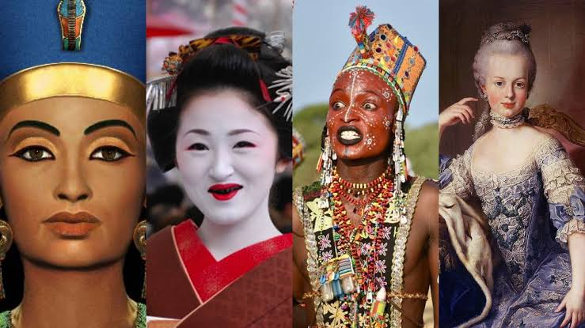

❤️
 ¿TE HAS PREGUNTADO COMO SE MAQUILLABAN ANTES?El maquillaje histórico tiene sus raíces en la antigua civilización egipcia, donde los colores y pigmentos naturales se utilizaban para realzar los ojos, labios y cejas. Estos cosméticos, aplicados con brochas o en forma de polvo, abarcaban una amplia gama de tonos, desde el negro de diezmillo hasta los rojos obtenidos de minerales como el óxido de hierro .